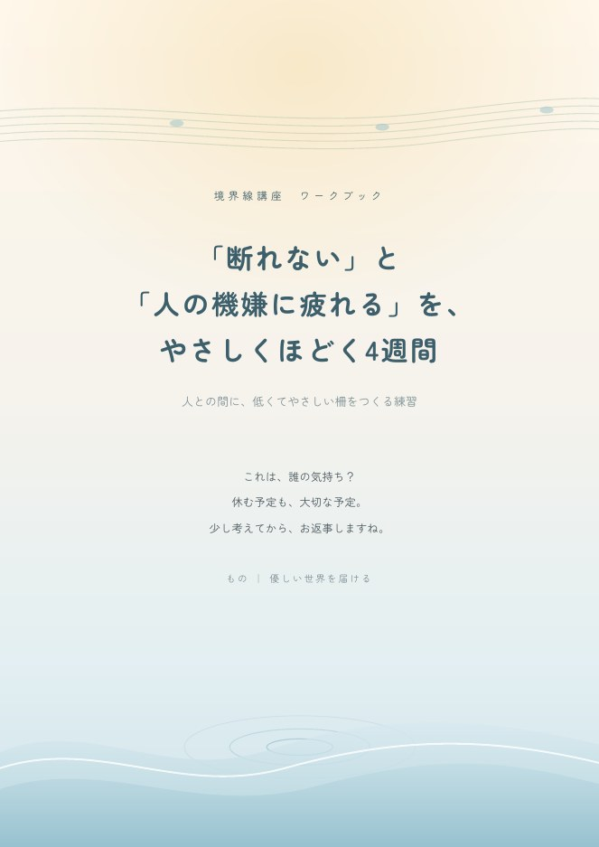

人との間に
低くてやさしい柵をつくる練習

講座に申し込む29,800円（税込）・音声29本、ワークブック、LINE質問、特典9つ今回の募集は10名まで。【締め切りの日】まで
人の気持ちに気づける力が
ちゃんとはたらいている、しるしでもあります。
人の気持ちに気づきやすい人は
心の柵が、とても低くなっていることがあります。
相手の気持ちが、柵をこえて
すっと、自分の庭に入ってくる。
気づいた時には
自分の庭が、人の気持ちでいっぱいになっている。
この講座でつくるのは
人を遠ざける、高い壁ではありません。
自分の場所が、どこまでかを知っていて
門をあけるかどうかを、自分で選べる。
そんな、低くてやさしい柵です。
人の気持ちと、自分の気持ちを分けて見る。
3つの問いで、気持ちの持ち主を見つけます。
休むことを、ごほうびではなく予定にする。
回復の4つのかたちと、自分の定員を知ります。
気づく、ひと呼吸、選ぶ。
やさしい断り方と、断ったあとのつなぎ直し。
責める声に名前をつけて
大切な人に言うように、自分に話しかける。
職場／家族／友だちとパートナー／SNSとLINE
人の機嫌と声の圧／我慢と努力の見分け方
合わせることと、本心のバランス
各週に、目を閉じて一緒にやる
誘導ワークの音声がついています。
読むだけでなく
体で練習できる講座です。
変わり方には、人それぞれのペースがあります。
「必ず断れるようになる」とは、お約束できません。
そのかわり、何度でも戻ってこられる場所として
音声とワークブックを用意しました。
気持ちがうつるしくみ
回復のための時間の使い方
断り方の型
自分へのやさしさ
講座の中身は、心理学の研究をもとにしています。
むずかしい言葉は使わず
毎日の場面で使える形にしてお届けします。
あらためて、ものです。
21日間を受けてくださった方に
少しだけわたしの話をさせてください。
わたしも、HSP気質の当事者で、さまざまな感覚を感じながら過ごしています。
耳は、完全には閉じられない。
疲れている日ほど、まわりの音や言葉が、まっすぐ深く届いてきます。
それを受けとめ続けるのは大変で、
今も私にとっての課題になっています。
いじめを受けた時期がありました。
大人になってからは、心と体が動かなくなり適応障害の診断を受け、うつとも向き合ってきました。
記憶は思っているよりなくならないから、そのときのイメージや声などは、今でも思い浮かぶことはあります。
生きることをやめようと思うほど
追いつめられた時期もあります。
カウンセリングや、信頼できる方の助けを借りながら、何とか生きていた。
家族とはうまくいかず、苛立ちが募る日々。
パートナーとのすれちがいと
自分の本当の望みとの、ギャップ。
結婚して家族がいる、そんな普通の生活をしているひとたちのことを、うらやましく思ったこともあります。
そんなわたしを救ってくれたのは
小さな「好き」でした。
好きな音、好きな時間、好きな景色。
そこに意識を初めて向けられたとき、
全て変わっていきました。自分が本当に感じたかったのはこの感覚だと。
ここまで来られた自分に
今は、本当に感謝出来るようになりました。
人と生きていく間で、自分をすり減らさずにいられる方法をわたし自身のために、ずっと探してきました。
この講座は、その答えを
研究と照らし合わせながら、形にしたものの一つです。
自分と他人の境界線を引く。一瞬で言葉や情報が動く今の時代には、必須とも言えるかもしれない技術。
自分の「好き」を意識し続けるための心の柵の作りかたなど。
これら全てを詰め込みました。
今、あなたが苦しむことがほんの少しでもなくなって。
あなたが、少しでも、一瞬でもいいから、楽に生きられるように。
あなたが、あなた自身を幸せにできるように。
ここまで読んでいただいてありがとうございます。
この講座をきっかけにして、この生きづらい世の中を、心地よく、あなたらしく、自由に生きて行けることが叶ったなら。
それは私にとってかつてない励みになります。
ぜひとも宜しくお願いします。お待ちしています。
生きやすくいきましょう。
今、つらさが強い方は、ひとりで抱えずに相談先を頼ってください。
よりそいホットライン 0120-279-338（24時間）
Xでは「もの ｜ 優しい世界を届ける」として、毎日、言葉を届けています。
この講座は、セルフケアの講座です。
カウンセリングや治療の代わりではありません。
29,800円（税込）
音声29本、ワークブック、LINE質問4回、特典9つ
今回の募集は10名まで。【締め切りの日】まで
1期の方には、受講のあとに短い感想をお願いしています。
（掲載は、許可をいただけた方だけです）
カードの分割払いが使えるかは
お使いのカード会社にご確認ください。
見送ることも、大切な選択です。
今は受けない、と決めた方にも
LINEでは、これまでどおり言葉と声を届けます。